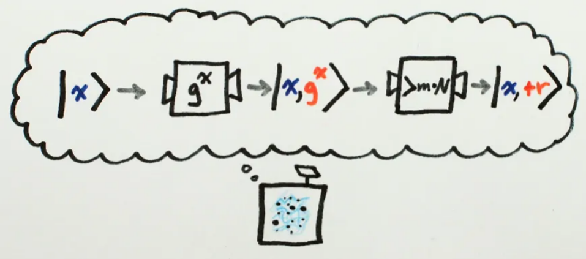
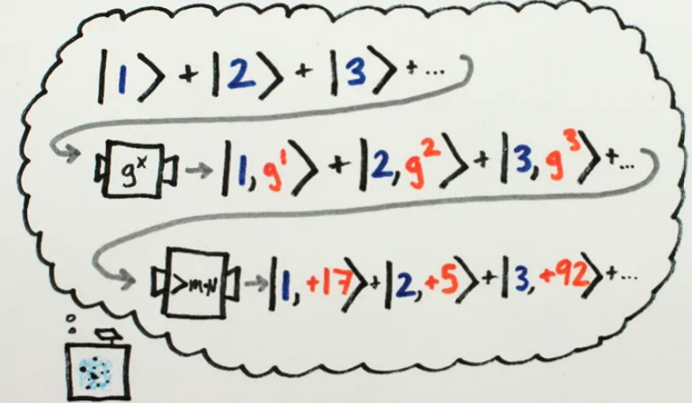
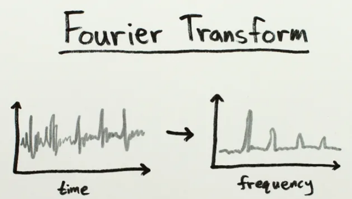
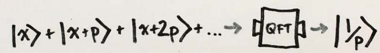

前言
前一陣子有讀了一些關於量子計算的論文，對於Shor's Algorithm 一直以來都是只聞其名，卻不知其所以然。只知道只要牽扯到量子的東西就是強，就是快。但是經過和同學、老師之間討論，對於量子計算的東西也有點熟悉，就分享一下關於Shor's Algorithm 我是如何理解的。
目標
加速質因數分解
聽起來是很清楚的目標，但是如何加速才是真正問題的所在。
一般而言，分解一個 75 位數字需要幾分鐘的時間，但即使是地球上最強大的機器也無法在合理的時間內分解足夠大的數字。例如，名為 RSA-220 的數字有 220 位長，並且是第一個在 2016 年借助大量計算機資源進行了因數分解。78923451 和 RSA-220 等數字被稱為半質數(semi-prime numbers)，因為它們只能被分解為其他兩個質數。
差異
Shor's Algorithm 的運作需要多項式時間（時間是 log N 的某個多項式這麼長，log N 在這裡的意義是輸入的檔案長度），大約是 O((log N)³)。
而現在常用的因數分解演算法普通數域篩選法(GNFS) 是所花費次指數時間，大約 O(e^(1.9(log N)^(1/3) ) (log log N)^(2/3) ) 。兩者之間差一個指數量級。
Shor's Algorithm 的意義非常重要，它意味著：假如有可用的量子計算機，我們可以破解非對稱加密的演算法（比如RSA加密演算法）。
以下就說明一下我是如何理解這個演算法的，因為 medium 沒辦法打數學式，所以有些地方會有點粗糙，大家就稍微見諒一下，我也盡量不用太多數學解釋。
兩個方向
雖然說Shor's Algorithm 是量子演算法，但是他本身也是有和一般演算法相似之處，另外一部分才是量子電腦可以應用的地方。
- Traditional computer
- Quantum computer (faster, need QFT)
此處 QFT 指的是 Quantum Fourier Transform 量子傅立葉轉換。
Traditional Part
- 先選擇一個數字 g<N，此處 N 為欲分解的大數。
- 計算兩者之間的最大公因數，這裡可以使用輾轉相除法計算。
- 若兩者之間最大公因數不為 1，則我們擁有了一個 N 非 1 的因數，分解結束。
- 若兩者之間最大公因數為 1，運用循環群週期性尋找週期，目的是找出以下函數的週期：f(x)=g^x (mod N)。換句話說，就是一直對 g 做乘冪，找出 g 在 Z_n 裡面的 rank (階) p，使得 f(x+p)=f(x)。
- 若週期是奇數，則回到第一步。
- 若 g^(p/2) 同餘 -1 (mod N)，則回到第一步。
- 最後，gcd(g^(p/2)+1, N) 與 gcd(g^(p/2)-1, N) 至少有一個是 N 非平凡的因數，分解完成。
從一整個分解的流程中就會遇到一些問題和疑惑，第一個就是為什麼最後是選擇g^(p/2)+1 和 g^(p/2)-1？ 這裡必須提到一個定理就是 Euler's theorem 歐拉定理。
A 和 B 之間互質，A 只要乘足夠多次，必定使得 A^p = m*B + 1。
其餘定理細節及證明可以參考wikipedia，這裡不多贅述。
Link在這邊舉個例子 7 和 15
- 7²=3*15+4
- 7³=22*15+13
- 7⁴=160*15+1
乘到第 4 次就可以找到同餘 1 的次方數。
接著繼續剛才的計算，我有兩個數 N 和 g，根據歐拉定理我必可以得到 g^p = m*N + 1。因此經過整理可得 (g^(p/2)+1) * (g^(p/2)-1) = m*N，達成條件。
Easier Way to Explain
以上推導簡而言之可以視為以下三點：
- 我們想要分解 N = ？ * ？
- 隨機猜一個小於 N 的數 g
- Shor's Algorithm 給了一個更好的猜測，g^(p/2)+1 和 g^(p/2)-1
經過了一連串的數學推導得到了Shor's Algorithm 的目的，更快地分解 N，但是仍然會遭遇一些問題。
- g^(p/2)+1 和 g^(p/2)-1 可能本身就是 N 的倍數，因此找不到之間的公因數。
- p 可能是奇數，這和剛剛流程的地方呼應，若是奇數，我們仍然無法分解N。
- p 可能本身是很難尋找的，這個是整個演算法中最關鍵，也最難解決的問題，而這也是量子電腦加速的地方。
Quantum Part
量子電腦和傳統電腦的差異就是，由於量子位元的疊加和糾纏特性，使得量子位元可以不像傳統電腦位元只能為 0 或 1，而是能夠同時為 0 和 1，此特性使量子位元的運算能力增加，量子電腦得以進行大量資料的平行運算。
因為量子電腦是以機率幅輸出，得到的答案都是機率性的，也就是說，經過我們觀測後，最後只能得到隨機的一個情況。
量子計算的關鍵就是設計一個量子疊加態，可以同時計算所有可能的答案，並使所有錯誤的答案都互相相消，此時在測量計算結果時，答案就很有可能是對的。
平時產生上述所提到的相消干涉是很難的，但是Shor's Algorithm 就是讓這種情況產生，對找尋 p 的過程產生相消，使正確的 p 更快地被找到。
回想前一部分 我們的目標是找到 p，使得餘數為 1。
我用下圖理解量子電腦所做的事，我輸入x，電腦可以算出 g^x，有了 g^x，就可以找出餘數 r，這裡最後的 r 我們希望是 1。
此處，量子電腦就可以平行計算g^x，達到傳統電腦無法達到的速度。
經過測量後，我們可以得到一組答案，可能是 |2, +5>，但是，這個答案很有可能不是我們想要的。這裡我們需要一個方法讓所有不是 p 的答案都相消，只剩下唯一有可能的答案 |p, +1>。
我們想要得到：
g^p = m*N + 1
而經過量子平行計算，我們可以同時得到多個餘數是 r 的情況。
g^x = m_1*N + r
g^(x+p) = m_2*N + r
g^(x-p) = m_3*N + r
...
經過檢查可以發現，g^x 乘上不同倍數個 g^p，餘數必定不會改變，因為 g^p = m*N + 1，此時 p 擁有 repeating property。
重新回到量子計算中，若我們取所有可能的量子疊加態，從量子電腦測量餘數，我們會隨機獲得一個輸出，不一定等於1，不過不重要，因為我們一定也可以同時獲得所有餘數相同的量子疊加態，這便是量子計算中一個特殊的性質：
如果輸入一個量子疊加態，並得到一個來自量子疊加態中多於一個元素的答案，我們就會獲得這些元素的量子疊加態。
此時，根據 repeating property，我們可以獲得所有相同餘數的量子疊加態，而他們之間都相差週期 p，或者說他們都重複相同頻率 1/p，如果我們能夠找到這個頻率，就可以找到 p，進而破解加密。
而找尋一個東西的頻率，最好的方法就是傅立葉變換。
傅立葉變換可以讓我們從時域訊號轉換到頻域，而此處應用的是量子版本的傅立葉變換，又稱QFT，我們可以將頻率皆為1/p 的量子疊加態進行QFT，並使所有錯誤的頻率相消，只留下一個量子態，也就是頻率為 1/p，最後通過觀測這個頻率獲得最終計算結果，也就是 p。
QFT 可以讓輸入的數字轉化成一組量子疊加態，所有量子疊加態都被賦予不同權重，使得他們看起來就像一個正弦波，而這個正弦波的頻率正是我們輸入的數。若輸入一個量子疊加態，輸出的疊加態裡的正弦波就會相互抵消。
若此時輸入的數字間隔 p，這些正弦波都會相互抵銷，只留下一個量子態： 1/p。
後記
雖然Shor's Algorithm 看起來很強很快，貌似現今RSA 的世界可能會被Shor's Algorithm 結束，但是現今社會的量子電腦穩定性都不夠，沒有足夠的 qubit 來儲存，目前也就只能分解15、21 這樣的數，雖說密碼學協議超前部署是必須的，但也不必太過緊張，未來還有一大段路要發展。
我是一位量子計算初學者，了解一些量子計算之後，覺得這實在很神奇，讀的也很有興致，想繼續深入的了解更多量子計算的mechanics。不過關於quantum circuit 的部分真的是有點複雜，讀起來有點辛苦，希望未來不要被難倒QQ。
此篇心得內容理解都是以初學心態了解，可能內容陳述有誤，歡迎量子專家指教，我會非常感謝。
Reference
https://www.youtube.com/watch?v=lvTqbM5Dq4Q&ab_channel=minutephysics這個影片講的十分清楚，對於初學者是很好的教學影片，文章中有些圖片就是用他畫的圖片。